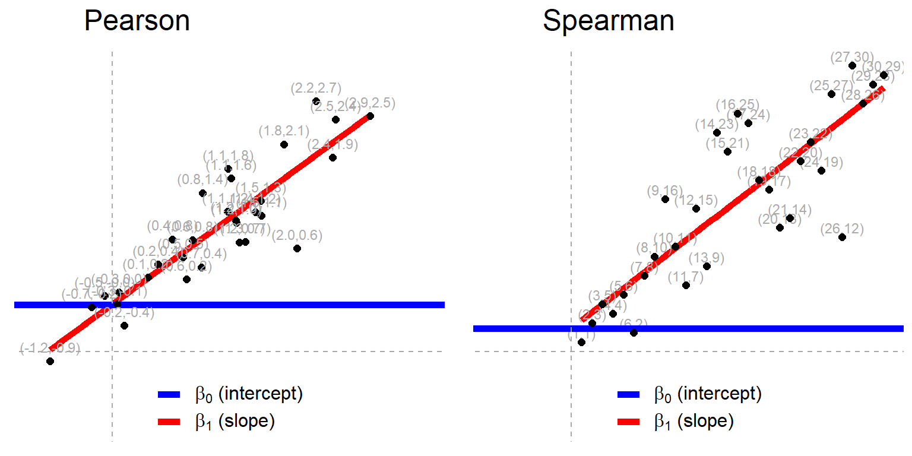

Common statistical tests are linear models (or: how to teach stats)
Jonas Kristoffer Lindeløv
This document is summarised in the table below. It shows the linear models underlying common parametric and non-parametric tests. Formulating all the tests in the same language highlights the many similarities between them. Get it as an image or as a PDF.

1 The simplicity underlying common tests
Most of the common statistical models (t-test, correlation, ANOVA; chi-square, etc.) are special cases of linear models or a very close approximation. This beautiful simplicity means that there is less to learn. In particular, it all comes down to \(y = a \cdot x + b\) which most students know from highschool. Unfortunately, stats intro courses are usually taught as if each test is an independent tool, needlessly making life more complicated for students and teachers alike.
This needless complexity multiplies when students try to rote learn the parametric assumptions underlying each test separately rather than deducing them from the linear model.
For this reason, I think that teaching linear models first and foremost and then name-dropping the special cases along the way makes for an excellent teaching strategy, emphasizing understanding over rote learning. Since linear models are the same across frequentist, Bayesian, and permutation-based inferences, I’d argue that it’s better to start with modeling than p-values, type-1 errors, Bayes factors, or other inferences.
Concerning the teaching of non-parametric tests in intro-courses, I think that we can justify lying-to-children and teach non-parametric tests as if they are merely ranked versions of the corresponding parametric tests. It is much better for students to think “ranks!” than to believe that you can magically throw away assumptions. Indeed, the Bayesian equivalents of non-parametric tests implemented in JASP literally just do (latent) ranking and that’s it. For the frequentist non-parametric tests considered here, this approach is highly accurate for N > 15.
Use the menu to jump to your favourite section. There are links to lots of similar (though more scattered) stuff under sources and teaching materials. I hope that you will join in suggesting improvements or submitting improvements yourself in the Github repo to this page. Let’s make it awesome!
2 Settings and toy data
Unfold this if you want to see functions and other settings for this notebook:# Load packages for data handling and plotting
library(tidyverse)
library(patchwork)
library(broom)
# Reproducible "random" results
set.seed(40)
# To show tables. Rounds
print_df = function(D, decimals=4, navigate=FALSE) {
DT::datatable(mutate_if(D, is.numeric, round, decimals),
rownames = FALSE,
options = list(
searching=FALSE,
lengthChange=FALSE,
ordering=FALSE,
autoWidth=TRUE,
bPaginate=navigate,
bInfo=navigate,
paging=navigate
)
)
}
# Generate normal data with known parameters
rnorm_fixed = function(N, mu=0, sd=1) scale(rnorm(N))*sd + mu
# Plot style.
theme_axis = function(P, jitter=FALSE, xlim=c(-0.5, 2), ylim=c(-0.5, 2), legend.position=NULL) {
P = P + theme_bw(15) +
geom_segment(x=-1000, xend=1000, y=0, yend=0, lty=2, color='dark gray', lwd=0.5) +
geom_segment(x=0, xend=0, y=-1000, yend=1000, lty=2, color='dark gray', lwd=0.5) +
coord_cartesian(xlim=xlim, ylim=ylim) +
theme(axis.title = element_blank(),
axis.text = element_blank(),
axis.ticks = element_blank(),
panel.border = element_blank(),
panel.grid = element_blank(),
legend.position = legend.position)
# Return jittered or non-jittered plot?
if(jitter) {
P + geom_jitter(width=0.1, size=2)
}
else {
P + geom_point(size=2)
}
}For a start, we’ll keep it simple and play with three standard normals in wide (a, b, c) and long format (value, group):
# Wide format (sort of)
y = rnorm_fixed(50, mu=0.3, sd=2) # Almost zero mean
x = rnorm_fixed(50, mu=0, sd=1) # Used in correlation where this is on x-axis
y2 = rnorm_fixed(50, mu=0.5, sd=1.5) # Used in two means
# Long format data with indicator
value = c(y, y2)
group = rep(c('y1', 'y2'), each = 50)
# We'll need the signed rank function for a lot of the "non-parametric" tests
signed_rank = function(x) sign(x) * rank(abs(x))3 Pearson and Spearman correlation
3.0.1 Theory: As linear models
Model: the recipe for \(y\) is a slope (\(\beta_1\)) times \(x\) plus an intercept (\(\beta_0\), aka a straight line).
\(y = \beta_0 + \beta_1 x \qquad \mathcal{H}_0: \beta_1 = 0\)
… which is a math-y way of writing the good old \(y = ax + b\) (here ordered as \(y = b + ax\)). In R we are lazy and write y ~ 1 + x which R reads like y = 1*number + x*othernumber and the task of t-tests, lm, etc., is simply to find the numbers that best predict \(y\).
Either way you write it, it’s an intercept (\(\beta_0\)) and a slope (\(\beta_1\)) yielding a straight line:
# Fixed correlation
D_correlation = data.frame(MASS::mvrnorm(30, mu=c(0.9, 0.9), Sigma=matrix(c(1, 0.8, 1, 0.8), ncol=2), empirical=TRUE)) # Correlated data
# Add labels (for next plot)
D_correlation$label_num = sprintf('(%.1f,%.1f)', D_correlation$X1, D_correlation$X2)
D_correlation$label_rank = sprintf('(%i,%i)', rank(D_correlation$X1), rank(D_correlation$X2))
# Plot it
fit = lm(I(X2*0.5+0.4) ~ I(X1*0.5+0.2), D_correlation)
intercept_pearson = coefficients(fit)[1]
P_pearson = ggplot(D_correlation, aes(x=X1*0.5+0.2, y=X2*0.5+0.4)) +
geom_smooth(method=lm, se=FALSE, lwd=2, aes(colour='beta_1')) +
geom_segment(x=-100, xend=100,
y=intercept_pearson, yend=intercept_pearson,
lwd=2, aes(color="beta_0")) +
scale_color_manual(name=NULL, values=c("blue", "red"), labels=c(bquote(beta[0]*" (intercept)"), bquote(beta[1]*" (slope)")))
theme_axis(P_pearson, legend.position=c(0.4, 0.9))
This is often simply called a regression model which can be extended to multiple regression where there are several \(\beta\)s and on the right-hand side multiplied with the predictors. Everything below, from one-sample t-test to two-way ANOVA are just special cases of this system. Nothing more, nothing less.
As the name implies, the Spearman rank correlation is a Pearson correlation on rank-transformed \(x\) and \(y\):
\(rank(y) = \beta_0 + \beta_1 \cdot rank(x) \qquad \mathcal{H}_0: \beta_1 = 0\)
The correlation coefficient of the linear model is identical to a “real” Pearson correlation, but p-values are an approximation which is is appropriate for samples greater than N=10 and almost perfect when N > 20. Such a nice and non-mysterious equivalence that many students are left unaware of! Visualizing them side by side including data labels, we see this rank-transformation in action:
# Spearman intercept
intercept_spearman = coefficients(lm(rank(X2) ~ rank(X1), D_correlation))[1]
# Spearman plot
P_spearman = ggplot(D_correlation, aes(x=rank(X1), y=rank(X2))) +
geom_smooth(method=lm, se=FALSE, lwd=2, aes(color='beta_1')) +
geom_text(aes(label=label_rank), nudge_y=1, size=3, color='dark gray') +
geom_segment(x=-100, xend=100,
y=intercept_spearman, yend=intercept_spearman,
lwd=2, aes(color='beta_0')) +
scale_color_manual(name=NULL, values=c("blue", "red"), labels=c(bquote(beta[0]*" (intercept)"), bquote(beta[1]*" (slope)")))
# Stich together using patchwork
(theme_axis(P_pearson, legend.position=c(0.5, 0.1)) + geom_text(aes(label=label_num), nudge_y=0.1, size=3, color='dark gray') + labs(title=' Pearson')) + (theme_axis(P_spearman, xlim=c(-7.5, 30), ylim=c(-7.5, 30), legend.position=c(0.5, 0.1)) + labs(title=' Spearman'))
3.0.2 R code: Pearson correlation
It couldn’t be much simpler to run these models in R. They yield identical p and t, but there’s a catch: lm gives you the slope and even though that is usually much more interpretable and informative than the correlation coefficient r, you may still want r. Luckily, the slope becomes r if x and y have a standard deviation of exactly 1. You can do this using scale(x) or I(x/sd(x)):
a = cor.test(y, x, method = "pearson") # Built-in
b = lm(y ~ 1 + x) # Equivalent linear model: y = Beta0*1 + Beta1*x
c = lm(scale(y) ~ 1 + scale(x)) # On scaled vars to recover r##
## Pearson's product-moment correlation
##
## data: y and x
## t = -1.6507, df = 48, p-value = 0.1053
## alternative hypothesis: true correlation is not equal to 0
## 95 percent confidence interval:
## -0.47920849 0.04978276
## sample estimates:
## cor
## -0.2317767
##
##
## Call:
## lm(formula = y ~ 1 + x)
##
## Residuals:
## Min 1Q Median 3Q Max
## -3.3393 -1.6593 0.3349 1.3629 3.5214
##
## Coefficients:
## Estimate Std. Error t value Pr(>|t|)
## (Intercept) 0.3000 0.2780 1.079 0.286
## x -0.4636 0.2808 -1.651 0.105
##
## Residual standard error: 1.966 on 48 degrees of freedom
## Multiple R-squared: 0.05372, Adjusted R-squared: 0.03401
## F-statistic: 2.725 on 1 and 48 DF, p-value: 0.1053
##
##
## Call:
## lm(formula = scale(y) ~ 1 + scale(x))
##
## Residuals:
## Min 1Q Median 3Q Max
## -1.6697 -0.8297 0.1675 0.6815 1.7607
##
## Coefficients:
## Estimate Std. Error t value Pr(>|t|)
## (Intercept) -1.341e-17 1.390e-01 0.000 1.000
## scale(x) -2.318e-01 1.404e-01 -1.651 0.105
##
## Residual standard error: 0.9828 on 48 degrees of freedom
## Multiple R-squared: 0.05372, Adjusted R-squared: 0.03401
## F-statistic: 2.725 on 1 and 48 DF, p-value: 0.1053The CIs are not exactly identical, but very close.
3.0.3 R code: Spearman correlation
Note that we can interpret the slope which is the number of ranks \(y\) change for each rank on \(x\). I think that this is a pretty interesting number. However, the intercept is less interpretable since it lies at \(rank(x) = 0\) which is impossible since x starts at 1.
See the identical r (now “rho”) and p:
# Spearman correlation
a = cor.test(y, x, method = "spearman") # Built-in
b = lm(rank(y) ~ 1 + rank(x)) # Equivalent linear model##
## Spearman's rank correlation rho
##
## data: y and x
## S = 25544, p-value = 0.1135
## alternative hypothesis: true rho is not equal to 0
## sample estimates:
## rho
## -0.2266026
##
##
## Call:
## lm(formula = rank(y) ~ 1 + rank(x))
##
## Residuals:
## Min 1Q Median 3Q Max
## -26.4655 -11.5603 0.4458 11.5628 25.6921
##
## Coefficients:
## Estimate Std. Error t value Pr(>|t|)
## (Intercept) 31.2784 4.1191 7.593 9.11e-10 ***
## rank(x) -0.2266 0.1406 -1.612 0.114
## ---
## Signif. codes: 0 '***' 0.001 '**' 0.01 '*' 0.05 '.' 0.1 ' ' 1
##
## Residual standard error: 14.35 on 48 degrees of freedom
## Multiple R-squared: 0.05135, Adjusted R-squared: 0.03159
## F-statistic: 2.598 on 1 and 48 DF, p-value: 0.11354 One mean
4.1 One sample t-test and Wilcoxon signed-rank
4.1.1 Theory: As linear models
t-test model: A single number predicts \(y\).
\(y = \beta_0 \qquad \mathcal{H}_0: \beta_0 = 0\)
In other words, it’s our good old \(y = \beta_0 + \beta_1*x\) where the last term is gone since there is no \(x\) (essentially \(x=0\), see left figure below).
The same is to a very close approximately true for Wilcoxon signed-rank test, just with the signed ranks of \(y\) instead of \(y\) itself (see right panel below and caveat in the end of this section):
\(signed\_rank(y) = \beta_0\)
# T-test
D_t1 = data.frame(y=rnorm_fixed(20, 0.5, 0.6),
x=runif(20, 0.93, 1.07)) # Fix mean and SD
P_t1 = ggplot(D_t1, aes(y=y, x=0)) +
stat_summary(fun.y=mean, geom = "errorbar", aes(ymax = ..y.., ymin = ..y.., color='beta_0'), lwd=2) +
scale_color_manual(name=NULL, values=c("blue"), labels=c(bquote(beta[0]*" (intercept)"))) +
geom_text(aes(label=round(y, 1)), nudge_x = 0.2, size=3, color='dark gray') +
labs(title=' T-test')
# Wilcoxon
D_t1_rank = data.frame(y = signed_rank(D_t1$y))
P_t1_rank = ggplot(D_t1_rank, aes(y=y, x=0)) +
stat_summary(fun.y=mean, geom = "errorbar", aes(ymax = ..y.., ymin = ..y.., color='beta_0'), lwd=2) +
scale_color_manual(name=NULL, values=c("blue"), labels=c(bquote(beta[0]*" (intercept)"))) +
geom_text(aes(label=y), nudge_x=0.2, size=3, color='dark gray') +
labs(title=' Wilcoxon')
# Stich together using patchwork
theme_axis(P_t1, ylim=c(-1, 2), legend.position=c(0.6, 0.1)) +
theme_axis(P_t1_rank, ylim=NULL, legend.position=c(0.6, 0.1))
One interesting implication is that many “non-parametric tests” are precisely as parametric as their parametric counterparts with means, standard deviations, homogeneity of variance, etc. - just on transformed data.
4.1.2 R code: One-sample t-test
Try running the R code below and see that the linear model (lm) produces the same \(t\), \(p\), and \(r\) as the built-in t.test. The confidence interval is not presented in the output of lm but is also identical if you use confint(lm(...)):
# Built-in t-test
a = t.test(y)
# Equivalent linear model: intercept-only
b = lm(y ~ 1)Results:
##
## One Sample t-test
##
## data: y
## t = 1.0607, df = 49, p-value = 0.294
## alternative hypothesis: true mean is not equal to 0
## 95 percent confidence interval:
## -0.2683937 0.8683937
## sample estimates:
## mean of x
## 0.3
##
##
## Call:
## lm(formula = y ~ 1)
##
## Residuals:
## Min 1Q Median 3Q Max
## -3.521 -1.673 0.481 1.427 3.795
##
## Coefficients:
## Estimate Std. Error t value Pr(>|t|)
## (Intercept) 0.3000 0.2828 1.061 0.294
##
## Residual standard error: 2 on 49 degrees of freedom4.1.3 R code: Wilcoxon signed-rank test
In addition to matching p-values, lm also gives us the mean signed rank, which I find to be an informative number.
# Built-in
a = wilcox.test(y)
# Equivalent linear model
b = lm(signed_rank(y) ~ 1) # See? Same as above, just on signed ranks
# Bonus: of course also works for one-sample t-test
c = t.test(signed_rank(y))Results:
##
## Wilcoxon signed rank test with continuity correction
##
## data: y
## V = 731, p-value = 0.3693
## alternative hypothesis: true location is not equal to 0
##
##
## Call:
## lm(formula = signed_rank(y) ~ 1)
##
## Residuals:
## Min 1Q Median 3Q Max
## -49.74 -25.49 4.76 22.76 46.26
##
## Coefficients:
## Estimate Std. Error t value Pr(>|t|)
## (Intercept) 3.740 4.151 0.901 0.372
##
## Residual standard error: 29.36 on 49 degrees of freedom
##
##
## One Sample t-test
##
## data: signed_rank(y)
## t = 0.90088, df = 49, p-value = 0.3721
## alternative hypothesis: true mean is not equal to 0
## 95 percent confidence interval:
## -4.60275 12.08275
## sample estimates:
## mean of x
## 3.744.2 Paired samples t-test and Wilcoxon matched pairs
4.2.1 Theory: As linear models
t-test model: a single number (intercept) predicts the pairwise differences.
\(y_2-y_1 = \beta_0 \qquad \mathcal{H}_0: \beta_0 = 0\)
This means that there is just one \(y = y_2 - y_1\) to predict and it becomes a one-sample t-test on the pairwise differences. The visualization is therefore also the same as for the one-sample t-test. At the risk of overcomplicating a simple substraction, you can think of these pairwise differences as slopes (see left panel of the figure), which we can represent as y-offsets (see right panel of the figure):
# Data for plot
N = nrow(D_t1)
start = rnorm_fixed(N, 0.2, 0.3)
D_tpaired = data.frame(x = rep(c(0, 1), each=N), y = c(start, start + D_t1$y), id=1:N)
# Plot
P_tpaired = ggplot(D_tpaired, aes(x=x, y=y)) +
geom_line(aes(group=id)) +
labs(title=' Pairs')
# Use patchwork to put them side-by-side
theme_axis(P_tpaired) + theme_axis(P_t1, legend.position=c(0.6, 0.1))
Similarly, the Wilcoxon matched pairs only differ from Wilcoxon signed-rank in that it’s testing the signed ranks of the pairwise \(y-x\) differences.
\(signed\_rank(y_2-y_1) = \beta_0 \qquad \mathcal{H}_0: \beta_0 = 0\)
4.2.2 R code: Paired sample t-test
a = t.test(y, y2, paired = TRUE) # Built-in paired t-test
b = lm(y - y2 ~ 1) # Equivalent linear modelResults:
##
## Paired t-test
##
## data: y and y2
## t = -0.52642, df = 49, p-value = 0.601
## alternative hypothesis: true difference in means is not equal to 0
## 95 percent confidence interval:
## -0.9634894 0.5634894
## sample estimates:
## mean of the differences
## -0.2
##
##
## Call:
## lm(formula = y - y2 ~ 1)
##
## Residuals:
## Min 1Q Median 3Q Max
## -6.5253 -1.5642 -0.0844 1.9715 5.0361
##
## Coefficients:
## Estimate Std. Error t value Pr(>|t|)
## (Intercept) -0.2000 0.3799 -0.526 0.601
##
## Residual standard error: 2.686 on 49 degrees of freedom4.2.3 R code: Wilcoxon matched pairs
Again, we do the signed-ranks trick. This is still an approximation, but a close one:
# Built-in Wilcoxon matched pairs
a = wilcox.test(y, y2, paired = TRUE)
# Equivalent linear model:
b = lm(signed_rank(y - y2) ~ 1)
# Bonus: identical to one-sample t-test ong signed ranks
c = t.test(signed_rank(y - y2))Results:
##
## Wilcoxon signed rank test with continuity correction
##
## data: y and y2
## V = 614, p-value = 0.8243
## alternative hypothesis: true location shift is not equal to 0
##
##
## Call:
## lm(formula = signed_rank(y - y2) ~ 1)
##
## Residuals:
## Min 1Q Median 3Q Max
## -49.06 -23.81 -2.56 26.19 46.94
##
## Coefficients:
## Estimate Std. Error t value Pr(>|t|)
## (Intercept) -0.940 4.184 -0.225 0.823
##
## Residual standard error: 29.58 on 49 degrees of freedom
##
##
## One Sample t-test
##
## data: signed_rank(y - y2)
## t = -0.22469, df = 49, p-value = 0.8232
## alternative hypothesis: true mean is not equal to 0
## 95 percent confidence interval:
## -9.347227 7.467227
## sample estimates:
## mean of x
## -0.94For large sample sizes (N >> 100), this approaches the sign test to a reasonable degree, but this approximation is too inaccurate to flesh out here.
5 Two means
5.1 Independent t-test and Mann-Whitney U
5.1.1 Theory: As linear models
Independent t-test model: two means predict \(y\).
\(y_i = \beta_0 + \beta_1 x_i \qquad \mathcal{H}_0: \beta_1 = 0\)
where \(x_i\) is an indicator (0 or 1) saying whether data point \(i\) was sampled from one or the other group. Indicator variables (also called “dummy coding”) underly a lot of linear models and we’ll take an aside to see how it works in a minute.
Mann-Whitney U (also known as Wilcoxon signed-rank test for two independent groups) is the same model to a very close approximation, just on the ranks of \(x\) and \(y\) instead of the actual values:
\(rank(y_i) = \beta_0 + \beta_1 x_i \qquad \mathcal{H}_0: \beta_1 = 0\)
To me, equivalences like this make “non-parametric” statistics much easier to understand. The approximation is appropriate when the sample size is larger than 11 in each group and virtually perfect when N > 30 in each group.
5.1.2 Theory: Dummy coding
Dummy coding can be understood visually. The indicator is on the x-axis so data points from the first group are located at \(x = 0\) and data points from the second group is located at \(x = 1\). Then \(\beta_0\) is the intercept (red line) and \(\beta_1\) is the slope between the two means (green line). Why? Because when \(\Delta x = 1\) the slope equals the difference because:
\(slope = \Delta y / \Delta x = \Delta y / 1 = \Delta y = difference\)
Magic! Even categorical differences can be modelled using linear models! It’s a true Swizz army knife.
# Data
N = 20 # Number of data points per group
D_t2 = data.frame(
x = rep(c(0, 1), each=N),
y = c(rnorm_fixed(N, 0.3, 0.3), rnorm_fixed(N, 1.3, 0.3))
)
# Plot
P_t2 = ggplot(D_t2, aes(x=x, y=y)) +
stat_summary(fun.y=mean, geom = "errorbar", aes(ymax = ..y.., ymin = ..y.., color='something'), lwd=2) +
geom_segment(x=-10, xend=10, y=0.3, yend=0.3, lwd=2, aes(color='beta_0')) +
geom_segment(x=0, xend=1, y=0.3, yend=1.3, lwd=2, aes(color='beta_1')) +
scale_color_manual(name=NULL, values=c("blue", "red", "darkblue"), labels=c(bquote(beta[0]*" (group 1 mean)"), bquote(beta[1]*" (slope = difference)"), bquote(beta[0]+beta[1]%.%1*" (group 2 mean)")))
#scale_x_discrete(breaks=c(0.5, 1.5), labels=c('1', '2'))
theme_axis(P_t2, jitter=TRUE, xlim=c(-0.3, 2), legend.position=c(0.53, 0.08))
5.1.3 Theory: Dummy coding (continued)
If you feel like you get dummy coding now, just skip ahead to the next section. Here is a more elaborate explanation of dummy coding:
If a data point was sampled from the first group, i.e., when \(x_i = 0\), the model simply becomes \(y = \beta_0 + \beta_1 \cdot 0 = \beta_0\). In other words, the model predicts that that data point is \(beta_0\). It turns out that the \(\beta\) which best predicts a set of data points is the mean of those data points, so \(\beta_0\) is the mean of group 1.
On the other hand, data points sampled from the second group would have \(x_i = 1\) so the model becomes \(y_i = \beta_0 + \beta_1\cdot 1 = \beta_0 + \beta_1\). In other words, we add \(\beta_1\) to “shift” from the mean of the first group to the mean of the second group. Thus \(\beta_1\) becomes the mean difference between the groups.
As an example, say group 1 is 25 years old (\(\beta_0 = 25\)) and group 2 is 28 years old (\(\beta_1 = 3\)), then the model for a person in group 1 is \(y = 25 + 3 \cdot 0 = 25\) and the model for a person in group 2 is \(y = 25 + 3 \cdot 1 = 28\).
Hooray, it works! For first-timers it takes a few moments to understand dummy coding, but you only need to know addition and multiplication to get there!
5.1.4 R code: independent t-test
As a reminder, when we write y ~ 1 + x in R, it is shorthand for \(y = \beta_0 \cdot 1 + \beta_1 \cdot x\) and R goes on computing the \(\beta\)s for you. Thus y ~ 1 + x is the R-way of writing \(y = a \cdot x + b\).
Notice the identical t, df, p, and estimates. We can get the confidence interval by running confint(lm(...)).
# Built-in independent t-test on wide data
a = t.test(y, y2, var.equal = TRUE)
# Be explicit about the underlying linear model by hand-dummy-coding:
group_y2 = ifelse(group == 'y2', 1, 0) # 1 if group == y2, 0 otherwise
b = lm(value ~ 1 + group_y2) # Using our hand-made dummy regressor
# Note: We could also do the dummy-coding in the model
# specification itself. Same result.
c = lm(value ~ 1 + I(group=='y2'))Results:
##
## Two Sample t-test
##
## data: y and y2
## t = -0.56569, df = 98, p-value = 0.5729
## alternative hypothesis: true difference in means is not equal to 0
## 95 percent confidence interval:
## -0.9016152 0.5016152
## sample estimates:
## mean of x mean of y
## 0.3 0.5
##
##
## Call:
## lm(formula = value ~ 1 + group_y2)
##
## Residuals:
## Min 1Q Median 3Q Max
## -3.5211 -1.1259 -0.2124 0.9151 4.9268
##
## Coefficients:
## Estimate Std. Error t value Pr(>|t|)
## (Intercept) 0.3000 0.2500 1.200 0.233
## group_y2 0.2000 0.3536 0.566 0.573
##
## Residual standard error: 1.768 on 98 degrees of freedom
## Multiple R-squared: 0.003255, Adjusted R-squared: -0.006916
## F-statistic: 0.32 on 1 and 98 DF, p-value: 0.5729
##
##
## Call:
## lm(formula = value ~ 1 + I(group == "y2"))
##
## Residuals:
## Min 1Q Median 3Q Max
## -3.5211 -1.1259 -0.2124 0.9151 4.9268
##
## Coefficients:
## Estimate Std. Error t value Pr(>|t|)
## (Intercept) 0.3000 0.2500 1.200 0.233
## I(group == "y2")TRUE 0.2000 0.3536 0.566 0.573
##
## Residual standard error: 1.768 on 98 degrees of freedom
## Multiple R-squared: 0.003255, Adjusted R-squared: -0.006916
## F-statistic: 0.32 on 1 and 98 DF, p-value: 0.57295.1.5 R code: Mann-Whitney U
# Wilcoxon / Mann-Whitney U
a = wilcox.test(y, y2)
# As linear model with our dummy-coded group_y2:
b = lm(rank(value) ~ 1 + group_y2) # compare to linear model above##
## Wilcoxon rank sum test with continuity correction
##
## data: y and y2
## W = 1211, p-value = 0.7907
## alternative hypothesis: true location shift is not equal to 0
##
##
## Call:
## lm(formula = rank(value) ~ 1 + group_y2)
##
## Residuals:
## Min 1Q Median 3Q Max
## -48.72 -24.64 -0.78 24.22 48.72
##
## Coefficients:
## Estimate Std. Error t value Pr(>|t|)
## (Intercept) 49.720 4.122 12.061 <2e-16 ***
## group_y2 1.560 5.830 0.268 0.79
## ---
## Signif. codes: 0 '***' 0.001 '**' 0.01 '*' 0.05 '.' 0.1 ' ' 1
##
## Residual standard error: 29.15 on 98 degrees of freedom
## Multiple R-squared: 0.0007302, Adjusted R-squared: -0.009466
## F-statistic: 0.07161 on 1 and 98 DF, p-value: 0.78965.2 Welch’s t-test
This is identical to the (Student’s) independent t-test above except that Student’s assumes identical variances and Welch’s t-test does not. So the linear model is the same and the trick is in the variances, which I won’t go further into here.
# Built-in
a = t.test(y, y2, var.equal=FALSE)
# As linear model with per-group variances
b = nlme::gls(value ~ 1 + group_y2, weights = nlme::varIdent(form=~1|group), method="ML")Results:
##
## Welch Two Sample t-test
##
## data: y and y2
## t = -0.56569, df = 90.875, p-value = 0.573
## alternative hypothesis: true difference in means is not equal to 0
## 95 percent confidence interval:
## -0.9023034 0.5023034
## sample estimates:
## mean of x mean of y
## 0.3 0.5
##
## Generalized least squares fit by maximum likelihood
## Model: value ~ 1 + group_y2
## Data: NULL
## AIC BIC logLik
## 399.6287 410.0493 -195.8143
##
## Variance function:
## Structure: Different standard deviations per stratum
## Formula: ~1 | group
## Parameter estimates:
## y1 y2
## 1.00 0.75
##
## Coefficients:
## Value Std.Error t-value p-value
## (Intercept) 0.3 0.2828427 1.0606602 0.2915
## group_y2 0.2 0.3535534 0.5656854 0.5729
##
## Correlation:
## (Intr)
## group_y2 -0.8
##
## Standardized residuals:
## Min Q1 Med Q3 Max
## -1.7784113 -0.7177541 -0.1430665 0.5635189 3.3178730
##
## Residual standard error: 1.979899
## Degrees of freedom: 100 total; 98 residual6 Three or more means
ANOVAs are linear models with (only) categorical predictors so they simply extend everything we did above, relying heavily on dummy coding. Do make sure to read the section on dummy coding if you haven’t already.
6.1 One-way ANOVA and Kruskal-Wallis
6.1.1 Theory: As linear models
Model: One mean for each group predicts \(y\).
\(y = \beta_0 + \beta_1 x_1 + \beta_2 x_2 + \beta_3 x_3 +... \qquad \mathcal{H}_0: y = \beta_1\)
where \(x_i\) are indicators (\(x=0\) or \(x=1\)) where at most one \(x_i=1\) while all others are \(x_i=0\).
Notice how this is just “more of the same” of what we already did in other models above. When there are only two groups, this model is \(y = \beta_0 + \beta_1*x\), i.e. the independent t-test. If there is only one group, it is \(y = \beta_0\), i.e. the one-sample t-test. This is easy to see in the visualization below - just cover up a few groups and see that it matches the other visualizations above, though I did omit adding green lines from the intercept (red) to the group means (blue) for visual clarity.
# Figure
N = 15
D_anova1 = data.frame(
y=c(rnorm_fixed(N, 0.5, 0.3),
rnorm_fixed(N, 0, 0.3),
rnorm_fixed(N, 1, 0.3),
rnorm_fixed(N, 0.8, 0.3)),
x=rep(0:3, each=15)
)
ymeans = aggregate(y~x, D_anova1, mean)$y
P_anova1 = ggplot(D_anova1, aes(x=x, y=y)) +
stat_summary(fun.y=mean, geom = "errorbar", aes(ymax = ..y.., ymin = ..y.., color='intercepts'), lwd=2) +
geom_segment(x=-10, xend=100, y=0.5, yend=0.5, lwd=2, aes(color='beta_0')) +
geom_segment(x=0, xend=1, y=ymeans[1], yend=ymeans[2], lwd=2, aes(color='betas')) +
geom_segment(x=1, xend=2, y=ymeans[1], yend=ymeans[3], lwd=2, aes(color='betas')) +
geom_segment(x=2, xend=3, y=ymeans[1], yend=ymeans[4], lwd=2, aes(color='betas')) +
scale_color_manual(
name=NULL, values=c("blue", "red", "darkblue"),
labels=c(
bquote(beta[0]*" (group 1 mean)"),
bquote(beta[1]*", "*beta[2]*", etc. (slopes/differences to "*beta[0]*")"),
bquote(beta[0]*"+"*beta[1]*", "*beta[0]*"+"*beta[2]*", etc. (absolute intercepts)")
)
)
theme_axis(P_anova1, xlim=c(-0.5, 4), legend.position=c(0.7, 0.1))
A one-way ANOVA has a log-linear counterpart called goodness-of-fit test which we’ll return to. By the way, since we now regress on more than one \(x\), the one-way ANOVA is a multiple regression model.
The Kruskal-Wallis test is simply a one-way ANOVA on the rank-transformed \(y\) (value):
\(rank(y) = \beta_0 + \beta_1 x_1 + \beta_2 x_2 + \beta_3 x_3 +...\)
This approximation is good enough for 12 or more data points. Again, if you do this for just one or two groups, we’re already acquainted with those equations, i.e. the Wilcoxon signed-rank test or the Mann-Whitney U test respectively.
6.1.2 Example data
We make a three-level factor with the levels a, b, and c so that the one-way ANOVA basically becomes a “three-sample t-test”. Then we manually do the dummy coding of the groups.
# Three variables in "long" format
N = 20 # Number of samples per group
D = data.frame(
value = c(rnorm_fixed(N, 0), rnorm_fixed(N, 1), rnorm_fixed(N, 0.5)),
group = rep(c('a', 'b', 'c'), each=N),
# Explicitly add indicator/dummy variables
# Could also be done using model.matrix(~D$group)
group_a = rep(c(1, 0, 0), each=N),
group_b = rep(c(0, 1, 0), each=N),
group_c = rep(c(0, 0, 1), each=N)) # N of each levelSee? Exactly one parameter predicts a value in a given row while the others are not included in the modeling of that value.
6.1.3 R code: one-way ANOVA
OK, let’s see the identity between the built-in ANOVA (car::Anova) and the in-your-face linear model, lm. The latter returns parameter estimates as well, but look at the overall model F-statistics which are identical. Note that I do not use the aov function because it computes type-I sum of squares. There is a BIG polarized debate about whether to use type-II (as car::Anova does by default) or type-III sum of squares, but let’s skip that for now.
# Compare built-in and linear model
a = car::Anova(aov(value ~ group, D)) # Built-in ANOVA
b = lm(value ~ 1 + group_a + group_b + group_c, data=D) # As in-your-face linear modelResults:
## Anova Table (Type II tests)
##
## Response: value
## Sum Sq Df F value Pr(>F)
## group 10 2 5 0.009984 **
## Residuals 57 57
## ---
## Signif. codes: 0 '***' 0.001 '**' 0.01 '*' 0.05 '.' 0.1 ' ' 1
##
## Call:
## lm(formula = value ~ 1 + group_a + group_b + group_c, data = D)
##
## Residuals:
## Min 1Q Median 3Q Max
## -2.4402 -0.6427 -0.1393 0.8060 1.8574
##
## Coefficients: (1 not defined because of singularities)
## Estimate Std. Error t value Pr(>|t|)
## (Intercept) 0.5000 0.2236 2.236 0.0293 *
## group_a -0.5000 0.3162 -1.581 0.1194
## group_b 0.5000 0.3162 1.581 0.1194
## group_c NA NA NA NA
## ---
## Signif. codes: 0 '***' 0.001 '**' 0.01 '*' 0.05 '.' 0.1 ' ' 1
##
## Residual standard error: 1 on 57 degrees of freedom
## Multiple R-squared: 0.1493, Adjusted R-squared: 0.1194
## F-statistic: 5 on 2 and 57 DF, p-value: 0.0099846.1.4 R code: Kruskal-Wallis
a = kruskal.test(value ~ group, D) # Built-in
b = lm(rank(value) ~ 1 + group_a + group_b + group_c, D) # As linear model
c = car::Anova(aov(rank(value) ~ group, D)) # Of course the same using the built-in ANOVA, which is just a wrapper around lmResults:
##
## Kruskal-Wallis rank sum test
##
## data: value by group
## Kruskal-Wallis chi-squared = 6.6777, df = 2, p-value = 0.03548
##
##
## Call:
## lm(formula = rank(value) ~ 1 + group_a + group_b + group_c, data = D)
##
## Residuals:
## Min 1Q Median 3Q Max
## -28.950 -12.213 -0.675 15.912 26.850
##
## Coefficients: (1 not defined because of singularities)
## Estimate Std. Error t value Pr(>|t|)
## (Intercept) 30.950 3.741 8.272 2.43e-11 ***
## group_a -7.800 5.291 -1.474 0.146
## group_b 6.450 5.291 1.219 0.228
## group_c NA NA NA NA
## ---
## Signif. codes: 0 '***' 0.001 '**' 0.01 '*' 0.05 '.' 0.1 ' ' 1
##
## Residual standard error: 16.73 on 57 degrees of freedom
## Multiple R-squared: 0.1132, Adjusted R-squared: 0.08206
## F-statistic: 3.637 on 2 and 57 DF, p-value: 0.03261
##
## Anova Table (Type II tests)
##
## Response: rank(value)
## Sum Sq Df F value Pr(>F)
## group 2036.7 2 3.6374 0.03261 *
## Residuals 15958.3 57
## ---
## Signif. codes: 0 '***' 0.001 '**' 0.01 '*' 0.05 '.' 0.1 ' ' 16.2 Two-way ANOVA (plot in progress!)
6.2.1 Theory: As linear models
Model: one mean per group (main effects) plus these means multiplied across factors (interaction effects). The main effects are the one-way ANOVAs above, though in the context of a larger model. The interaction effect is harder to explain in the abstract even though it’s just a few numbers multiplied with each other. I will leave that to the teachers to keep focus on equivalences here :-)
Switching to matrix notation:
\(y = \beta_0 + \beta_1 X_1 + \beta_2 X_2 + \beta_3 X_1 X_2 \qquad \mathcal{H}_0: \beta_3 = 0\)
Here \(\beta_i\) are vectors of betas of which only one is selected by the indicator vector \(X_i\). The \(\mathcal{H}_0\) shown here is the interaction effect. Note that the intercept \(\beta_0\), to which all other \(\beta\)s are relative, is now the mean for the first level of all factors.
Continuing with the dataset from the one-way ANOVA above, let’s add a crossing factor mood so that we can test the group:mood interaction (a 3x2 ANOVA). We also do the dummy coding of this factor needed for the linear model.
# Crossing factor
D$mood = c('happy', 'sad')
# Dummy coding
D$mood_happy = ifelse(D$mood == 'happy', 1, 0) # 1 if mood==happy. 0 otherwise.
D$mood_sad = ifelse(D$mood == 'sad', 1, 0) # Same, but we won't be needing this\(\beta_0\) is now the happy guys from group a!
# Add intercept line
# Add cross...
# Use other data?
means = lm(value ~ mood * group, D)$coefficients
P_anova2 = ggplot(D, aes(x=group, y=value, color=mood)) +
geom_segment(x=-10, xend=100, y=means[1], yend=0.5, col='blue', lwd=2) +
stat_summary(fun.y=mean, geom = "errorbar", aes(ymax = ..y.., ymin = ..y..), lwd=2)
theme_axis(P_anova2, xlim=c(-0.5, 3.5)) + theme(axis.text.x = element_text())
6.2.2 R code: Two-way ANOVA
Now let’s turn to the actual modeling in R. We compare the built-in ANOVA function to the linear model using lm. Notice that in ANOVA, we are testing a full factor interaction all at once which involves many parameters (two in this case), so we can’t look at the overall model fit nor any particular parameter for the result. Therefore, I use a likelihood-ratio test to compare a full two-way ANOVA model (“saturated”) to one without the interaction effect(s). We do so using the anova function. Even though that looks like cheating, it’s just computing likelihoods, p-values, etc. on the models that were already fitted, so it’s legit!
# Built-in two-way ANOVA.
a = car::Anova(aov(value ~ mood * group, D), type='II') # Normal notation. "*" both multiplies and adds main effects
b = car::Anova(aov(value ~ mood + group + mood:group, D)) # Identical but more verbose about main effects and interaction
# Testing the interaction terms as linear model.
full = lm(value ~ 1 + group_a + group_b + mood_happy + group_a:mood_happy + group_b:mood_happy, D) # Full model
null = lm(value ~ 1 + group_a + group_b + mood_happy, D) # Without interaction
c = anova(null, full) # whoop whoop, same F, p, and DfsResults:
## Anova Table (Type II tests)
##
## Response: value
## Sum Sq Df F value Pr(>F)
## mood 0.658 1 0.6314 0.43032
## group 10.000 2 4.8003 0.01206 *
## mood:group 0.096 2 0.0459 0.95520
## Residuals 56.247 54
## ---
## Signif. codes: 0 '***' 0.001 '**' 0.01 '*' 0.05 '.' 0.1 ' ' 1
## Analysis of Variance Table
##
## Model 1: value ~ 1 + group_a + group_b + mood_happy
## Model 2: value ~ 1 + group_a + group_b + mood_happy + group_a:mood_happy +
## group_b:mood_happy
## Res.Df RSS Df Sum of Sq F Pr(>F)
## 1 56 56.342
## 2 54 56.247 2 0.095565 0.0459 0.9552Below, I present approximate main effect models, though exact calculation of ANOVA main effects is more involved if it is to be accurate and furthermore depend on whether type-II or type-III sum of squares are used for inference.
Look at the model summary statistics to find values comparable to the Anova-estimated main effects above.
# Main effect of group.
e = lm(value ~ 1 + group_a + group_b, D)
# Main effect of mood.
f = lm(value ~ 1 + mood_happy, D)##
## Call:
## lm(formula = value ~ 1 + group_a + group_b, data = D)
##
## Residuals:
## Min 1Q Median 3Q Max
## -2.4402 -0.6427 -0.1393 0.8060 1.8574
##
## Coefficients:
## Estimate Std. Error t value Pr(>|t|)
## (Intercept) 0.5000 0.2236 2.236 0.0293 *
## group_a -0.5000 0.3162 -1.581 0.1194
## group_b 0.5000 0.3162 1.581 0.1194
## ---
## Signif. codes: 0 '***' 0.001 '**' 0.01 '*' 0.05 '.' 0.1 ' ' 1
##
## Residual standard error: 1 on 57 degrees of freedom
## Multiple R-squared: 0.1493, Adjusted R-squared: 0.1194
## F-statistic: 5 on 2 and 57 DF, p-value: 0.009984
##
##
## Call:
## lm(formula = value ~ 1 + mood_happy, data = D)
##
## Residuals:
## Min 1Q Median 3Q Max
## -2.65275 -0.70847 0.00213 0.63391 1.88950
##
## Coefficients:
## Estimate Std. Error t value Pr(>|t|)
## (Intercept) 0.6047 0.1953 3.097 0.00301 **
## mood_happy -0.2094 0.2761 -0.758 0.45136
## ---
## Signif. codes: 0 '***' 0.001 '**' 0.01 '*' 0.05 '.' 0.1 ' ' 1
##
## Residual standard error: 1.07 on 58 degrees of freedom
## Multiple R-squared: 0.009816, Adjusted R-squared: -0.007256
## F-statistic: 0.575 on 1 and 58 DF, p-value: 0.45146.3 ANCOVA
This is simply ANOVA with a continuous regressor added so that it now contains continuous and (dummy-coded) categorical predictors. For example, if we continue with the one-way ANOVA example, we can add age and it is now called a one-way ANCOVA:
\(y = \beta_0 + \beta_1 x_1 + \beta_2 x_2 + ... + \beta_3 age\)
… where \(x_i\) are our usual dummy-coded indicator variables. \(\beta_0\) is now the mean for the first group at \(age=0\). You can turn all ANOVAs into ANCOVAs this way, e.g. by adding \(\beta_N \cdot age\) to our two-way ANOVA in the previous section. But let us go ahead with our one-way ANCOVA, starting by adding \(age\) to our dataset:
# Update data with a continuous covariate
D$age = D$value + rnorm_fixed(nrow(D), sd=3) # Correlated to valueThis is best visualized using colors for groups instead of x-position. The \(\beta\)s are still the average \(y\)-offset of the data points, only now we model each group using a slope instead of an intercept. In other words, the one-way ANOVA is sort of one-sample t-tests model for each group (\(y = \beta_0\)) while the one-way ANCOVA is sort of Pearson correlation model for each group (\(y_i = \beta_0 + \beta_i + \beta_1 \cdot age\)):
# For linear model plot
D$pred = predict(lm(value ~ age + group, D))
# Plot
P_ancova = ggplot(D, aes(x=age, y=value, color=group, shape=group)) +
geom_line(aes(y=pred), lwd=2)
# Theme it
theme_axis(P_ancova, xlim=NULL, ylim=NULL, legend.position=c(0.8, 0.2)) + theme(axis.title=element_text())
And now some R code to run the one-way ANCOVA as a linear model:
# Built-in ANCOVA. The order of factors matter in pure-aov (type-I variance).
# Use type-II or type-III instead; implemented in car::Anova
a = car::Anova(aov(value ~ group + age, D))
#a = aov(value ~ group + age, D) # Predictor order matters. Not nice!
# As dummy-coded linear model.
full = lm(value ~ 1 + group_a + group_b + age, D)
# Testing main effect of age using Likelihood-ratio test
null_age = lm(value ~ 1 + group_a + group_b, D) # Full without age. One-way ANOVA!
result_age = anova(null_age, full)
# Testing main effect of groupusing Likelihood-ratio test
null_group = lm(value ~ 1 + age, D) # Full without group. Pearson correlation!
result_group = anova(null_group, full)Results:
## Anova Table (Type II tests)
##
## Response: value
## Sum Sq Df F value Pr(>F)
## group 10.118 2 6.4258 0.0030738 **
## age 12.910 1 16.3967 0.0001595 ***
## Residuals 44.090 56
## ---
## Signif. codes: 0 '***' 0.001 '**' 0.01 '*' 0.05 '.' 0.1 ' ' 1
## Analysis of Variance Table
##
## Model 1: value ~ 1 + group_a + group_b
## Model 2: value ~ 1 + group_a + group_b + age
## Res.Df RSS Df Sum of Sq F Pr(>F)
## 1 57 57.00
## 2 56 44.09 1 12.91 16.397 0.0001595 ***
## ---
## Signif. codes: 0 '***' 0.001 '**' 0.01 '*' 0.05 '.' 0.1 ' ' 1
## Analysis of Variance Table
##
## Model 1: value ~ 1 + age
## Model 2: value ~ 1 + group_a + group_b + age
## Res.Df RSS Df Sum of Sq F Pr(>F)
## 1 58 54.209
## 2 56 44.090 2 10.118 6.4258 0.003074 **
## ---
## Signif. codes: 0 '***' 0.001 '**' 0.01 '*' 0.05 '.' 0.1 ' ' 17 Proportions: Chi-square is a log-linear model
Recall that when you take the logarithm, you can easily make statements about proportions, i.e., that for every increase in \(x\), \(y\) increases a certain percentage. This turns out to be one of the simplest (and therefore best!) ways to make count data and contingency tables intelligible. See this nice introduction to Chi-Square tests as linear models.
7.1 Goodness of fit
7.1.1 Theory: As log-linear model
Model: a single intercept predicts \(log(y)\).
I’ll refer you to take a look at the section on contingency tables which is basically a “two-way goodness of fit”.
7.1.2 Example data
For this, we need some wide count data:
# Data in long format
D = data.frame(mood = c('happy', 'sad', 'meh'),
counts = c(60, 90, 70))
# Dummy coding for the linear model
D$mood_happy = ifelse(D$mood == 'happy', 1, 0)
D$mood_sad = ifelse(D$mood == 'sad', 1, 0)7.1.3 R code: Goodness of fit
Now let’s see that the Goodness of fit is just a log-linear equivalent to a one-way ANOVA. We set family = poisson() which defaults to setting a logarithmic link function (family = poisson(link='log')).
# Built-in test
a = chisq.test(D$counts)
# As log-linear model, comparing to an intercept-only model
full = glm(counts ~ 1 + mood_happy + mood_sad, data=D, family=poisson())
null = glm(counts ~ 1, data=D, family=poisson())
b = anova(null, full, test='Rao')
# Note: glm can also do the dummy coding for you:
c = glm(counts ~ mood, data=D, family=poisson())Let’s look at the results:
##
## Chi-squared test for given probabilities
##
## data: D$counts
## X-squared = 6.3636, df = 2, p-value = 0.04151
##
## Analysis of Deviance Table
##
## Model 1: counts ~ 1
## Model 2: counts ~ 1 + mood_happy + mood_sad
## Resid. Df Resid. Dev Df Deviance Rao Pr(>Chi)
## 1 2 6.2697
## 2 0 0.0000 2 6.2697 6.3636 0.04151 *
## ---
## Signif. codes: 0 '***' 0.001 '**' 0.01 '*' 0.05 '.' 0.1 ' ' 1Note the strange anova(..., test='Rao') which merely states that p-values should be computed using the (Rao) score test. We could also have jotted in test='Chisq' or test='LRT' which would have yielded approximate p-values. You may think that we’re cheating here, sneaking in some sort of Chi-Square model post-hoc. However, anova only specifies how p-values are calculated whereas all the log-linear modeling happened in glm.
By the way, if there are only two counts and a large sample size (N > 100), this model begins to approximate the binomial test, binom.test, to a reasonable degree. But this sample size is larger than most use cases, so I won’t raise to a rule-of-thumb and won’t dig deeper into it here.
7.2 Contingency tables
7.2.1 Theory: As log-linear model
The theory here will be a bit more convoluted, and I mainly write it up so that you can get the feeling that it really is just a log-linear two-way ANOVA model. Let’s get started…
For a two-way contingency table, the model of the count variable \(y\) is a modeled using the marginal proportions of a contingency table. Why this makes sense, is too involved to go into here, but see the relevant slides by Christoph Scheepers here for an excellent exposition. The model is composed of a lot of counts and the regression coefficients \(A_i\) and \(B_i\):
\(y_i = N \cdot x_i(A_i/N) \cdot z_j(B_j/N) \cdot x_{ij}/((A_i x_i)/(B_j z_j)/N)\)
What a mess!!! Here, \(i\) is the row index, \(j\) is the column index, \(x_{something}\) is the sum of that row and/or column, \(N = sum(y)\). Remember that \(y\) is a count variable, so \(N\) is just the total count.
We can simplify the notation by defining the proportions: \(\alpha_i = x_i(A_i/N)\), \(\beta_i = x_j(B_i/N)\) and \(\alpha_i\beta_j = x_{ij}/(A_i x_i)/(B_j z_j)/N\). Let’s write the model again:
\(y_i = N \cdot \alpha_i \cdot \beta_j \cdot \alpha_i\beta_j\)
Ah, much prettier. However, there is still lot’s of multiplication which makes it hard to get an intuition about how the actual numbers interact. We can make it much more intelligible when we remember that \(log(A \cdot B) = log(A) + log(B)\). Doing logarithms on both sides, we get:
\(log(y_i) = log(N) + log(\alpha_i) + log(\beta_j) + log(\alpha_i\beta_j)\)
Snuggly! Now we can get a better grasp on how the regression coefficients (which are proportions) independently contribute to \(y\). This is why logarithms are so nice for proportions. Note that this is just the two-way ANOVA model with some logarithms added, so we are back to our good old linear models - only the interpretation of the regression coefficients have changed! And we cannot use lm anymore in R.
7.2.2 Example data
Here we need some long data and we need it in table format for chisq.test:
# Contingency data in long format for linear model
D = data.frame(mood = c('happy', 'happy', 'meh', 'meh', 'sad', 'sad'),
sex = c('male', 'female', 'male', 'female', 'male', 'female'),
Freq = c(100, 70, 30, 32, 110, 120))
# ... and as table for chisq.test
D_table = D %>%
spread(key=mood, value=Freq) %>% # Mood to columns
select(-sex) %>% # Remove sex column
as.matrix()
# Dummy coding of D for linear model (skipping mood=="sad" and gender=="female")
# We could also use model.matrix(D$Freq~D$mood*D$sex)
D$mood_happy = ifelse(D$mood == 'happy', 1, 0)
D$mood_meh = ifelse(D$mood == 'meh', 1, 0)
D$sex_male = ifelse(D$sex == 'male', 1, 0)7.2.3 R code: Chi-square test
Now let’s show the equivalence between a chi-square model and a log-linear model. This is very similar to our two-way ANOVA above:
# Built-in chi-square. It requires matrix format.
a = chisq.test(D_table)
# Using glm to do a log-linear model, we get identical results when testing the interaction term:
full = glm(Freq ~ 1 + mood_happy + mood_meh + sex_male + mood_happy*sex_male + mood_meh*sex_male, data=D, family=poisson())
null = glm(Freq ~ 1 + mood_happy + mood_meh + sex_male, data=D, family=poisson())
b = anova(null, full, test='Rao') # Could also use test='LRT' or test='Chisq'
# Note: let glm do the dummy coding for you
full = glm(Freq ~ mood * sex, family=poisson(), data=D)
c = anova(full, test='Rao')
# Note: even simpler syntax using MASS:loglm ("log-linear model")
d = MASS::loglm(Freq ~ mood + sex, D)##
## Pearson's Chi-squared test
##
## data: D_table
## X-squared = 5.0999, df = 2, p-value = 0.07809
##
## Analysis of Deviance Table
##
## Model 1: Freq ~ 1 + mood_happy + mood_meh + sex_male
## Model 2: Freq ~ 1 + mood_happy + mood_meh + sex_male + mood_happy * sex_male +
## mood_meh * sex_male
## Resid. Df Resid. Dev Df Deviance Rao Pr(>Chi)
## 1 2 5.1199
## 2 0 0.0000 2 5.1199 5.0999 0.07809 .
## ---
## Signif. codes: 0 '***' 0.001 '**' 0.01 '*' 0.05 '.' 0.1 ' ' 1
## Analysis of Deviance Table
##
## Model: poisson, link: log
##
## Response: Freq
##
## Terms added sequentially (first to last)
##
##
## Df Deviance Resid. Df Resid. Dev Rao Pr(>Chi)
## NULL 5 111.130
## mood 2 105.308 3 5.821 94.132 < 2e-16 ***
## sex 1 0.701 2 5.120 0.701 0.40235
## mood:sex 2 5.120 0 0.000 5.100 0.07809 .
## ---
## Signif. codes: 0 '***' 0.001 '**' 0.01 '*' 0.05 '.' 0.1 ' ' 1
## Call:
## MASS::loglm(formula = Freq ~ mood + sex, data = D)
##
## Statistics:
## X^2 df P(> X^2)
## Likelihood Ratio 5.119915 2 0.07730804
## Pearson 5.099859 2 0.07808717
##
## Call:
## glm(formula = Freq ~ mood * sex, family = poisson(), data = D)
##
## Deviance Residuals:
## [1] 0 0 0 0 0 0
##
## Coefficients:
## Estimate Std. Error z value Pr(>|z|)
## (Intercept) 4.2485 0.1195 35.545 < 2e-16 ***
## moodmeh -0.7828 0.2134 -3.668 0.000244 ***
## moodsad 0.5390 0.1504 3.584 0.000339 ***
## sexmale 0.3567 0.1558 2.289 0.022094 *
## moodmeh:sexmale -0.4212 0.2981 -1.413 0.157670
## moodsad:sexmale -0.4437 0.2042 -2.172 0.029819 *
## ---
## Signif. codes: 0 '***' 0.001 '**' 0.01 '*' 0.05 '.' 0.1 ' ' 1
##
## (Dispersion parameter for poisson family taken to be 1)
##
## Null deviance: 1.1113e+02 on 5 degrees of freedom
## Residual deviance: 3.9968e-15 on 0 degrees of freedom
## AIC: 48.254
##
## Number of Fisher Scoring iterations: 3If you unfold the raw R output, I’ve included summary(full) so that you can see the raw regression coefficients. Being a log-linear model, these are the percentage increasein \(y\) over and above the intercept if that category obtains.
8 Sources and further equivalences
Here are links to other sources who have exposed bits and pieces of this puzzle, including many further equivalences not covered here:
- My original exposition of the idea at StackOverflow
- An earlier question by me about non-parametric tests and a helpful answer.
- This question and replies on t-tests and ANOVA at StackOverflow
- These slides by Christoph Scheepers on Chi-Square as log-linear models.
- This notebook by Philip M. Alday on Chi-square, binomial, multinomial, and poisson tests as log-linear and logistic models. These “equivalences” are less exact than what I presented above, and were therefore not included here. They are still great for a conceptual understanding of these tests, though!
- This article by Kristoffer Magnusson on RM-ANOVA and growth models using
lmermixed models. - This post by Thom Baguley on the Friedman test. That post was actually the one that inititated my exploration of linear equivalences to non-parametric tests which ultimately pushed me over the edge to write up the present article.
9 Teaching materials and a course outline
Most advanced stats books (and some intro-books) take the “everything is GLMM” approach as well. However, the “linear model” part often stay at the conceptual level. I wanted to make linear models the tool in a really concise way. Luckily, more beginner-friendly materials have emerged lately:
- Russ Poldracks open-source book “Statistical Thinking for the 21st century” (start at chapter 5 on modeling)
- Jeff Rouder’s course notes, introducing model comparison using just \(R^2\) and BIC. It avoids all the jargon on p-values, F-values, etc. The full materials and slides are available here.
Here are my own thoughts on what I’d do. I’ve done parts of this with great success already, but not the whole lot since I’m not assigned to do a full course yet.
I would spend 50% of the time on linear modeling of data (bullet 1 below) since this contains 70% of what students need to know. The rest of the course is just fleshing out what happens if you have one group, two groups, etc.
Note that whereas the understanding of sampling and hypothesis testing is usually the first focus of mainstream stats courses, it is saved for later here to make way for modeling.
Fundamentals of regression:
Recall from high-school: \(y = a \cdot x + b\), and getting a really good intuition about slopes and intercepts. Understanding that this can be written using all variable names, e.g.,
money = profit * time + starting_moneyor \(y = \beta_1x + \beta_2*1\) or, suppressing the coefficients, asy ~ x + 1. If the audience is receptive, convey the idea of these models as a solution to differential equations, specifying how \(y\) changes with \(x\).Extend to a few multiple regression as models. Make sure to include plenty of real-life examples and exercises at this point to make all of this really intuitive. Marvel at how briefly these models allow us to represent large datasets.
Introduce the idea of rank-transforming non-metric data and try it out.
Teach the three assumptions: independence of data points, normality of residuals, and homoscedasticity.
Confidence/credible intervals on the parameters. Stress that the Maximum-Likelihood estimate is extremely unlikely, so intervals are more important.
Briefly introduce \(R^2\) for the simple regression models above. Mention in passing that this is called the Pearson and Spearman correlation coefficients.
Special case #1: One or two means (t-tests, Wilcoxon, Mann-Whitney):
One mean: When there is only one x-value, the regression model simplifies to \(y = b\). If \(y\) is non-metric, you can rank-transform it. Apply the assumptions (homoscedasticity doesn’t apply since there is only one \(x\)). Mention in passing that these intercept-only models are called one-sample t-test and Wilcoxon Signed Rank test respectively.
Two means: If we put two variables 1 apart on the x-axis, the difference between the means is the slope. Great! It is accessible to our swizz army knife called linear modeling. Apply the assumption checks to see that homoscedasticity reduces to equal variance between groups. This is called an independent t-test. Do a few worked examples and exercises, maybe adding Welch’s test, and do the rank-transformed version, called Mann-Whitney U.
Paired samples: Violates the independence assumption. After computing pairwise differences, this is equivalent to 2.1 (one intercept), though it is called the paired t-test and Wilcoxon’s matched pairs.
Special case #2: Three or more means (ANOVAs)
Dummy coding of categories: How one regression coefficient for each level of a factor models an intercept for each level when multiplied by a binary indicator. This is just extending what we did in 2.1. to make this data accessible to linear modeling.
Means of one variable: One-way ANOVA.
Means of two variables: Two-way ANOVA.
Special case #3: Three or more proportions (Chi-Square)
Logarithmic transformation: Making multiplicative models linear using logarithms, thus modeling proportions. See this excellent introduction to the equivalence of log-linear models and Chi-Square tests as models of proportions. Also needs to introduce (log-)odds ratios. When the multiplicative model is made summative using logarithms, we just add the dummy-coding trick from 3.1, and see that the models are identical to the ANOVA models in 3.2 and 3.3, only the interpretation of the coefficients have changed.
Proportions of one variable: Goodness of fit.
Proportions of two variables: Contingency tables.
Hypothesis testing: Hypothesis testing is the act of choosing between a full model and one where a parameter is set to zero (effectively excluded from the model) instead of being estimated. For example, when set one of the two means in the t-test to be zero, we study how well the remaining mean explains all the data from both groups. If it does a good job, we prefer this model over the two-mean model because it is simpler. So hypothesis testing is just comparing linear models to make more qualitative statements than the truly quantitative statements which were covered in bullets 1-4 above. Therefore, hypothesis testing is less interesting and is mostly covered as an introduction to the general literature. Mention P-values (and misconceptions about them), Bayes Factors, and cross-validation.
10 Limitations
I have made a few simplifications for clarity:
I have not covered assumptions in the examples. This will be another post! But all assumptions of all tests come down to the usual three: a) independence of data points, b) normally distributed residuals, and c) homoscedasticity.
I assume that all null hypotheses are the absence of an effect, but everything works the same for non-zero null hypotheses.
I have not discussed inference. I am only including p-values in the comparisons as a crude way to show the equivalences between the underlying models since people care about p-values. Parameter estimates will show the same equivalence. How to do inference is another matter. Personally, I’m a Bayesian, but going Bayesian here would render it less accessible to the wider audience. Also, doing robust models would be preferable, but fail to show the equivalence.
Several named tests are still missing from the list and may be added at a later time. This includes the Sign test (require large N to be reasonably approximated by a linear model), Friedman as RM-ANOVA on
rank(y), McNemar, and Binomial/Multinomial. See stuff on these in the section on links to further equivalences. If you think that they should be included here, feel free to submit “solutions” to the github repo of this doc!